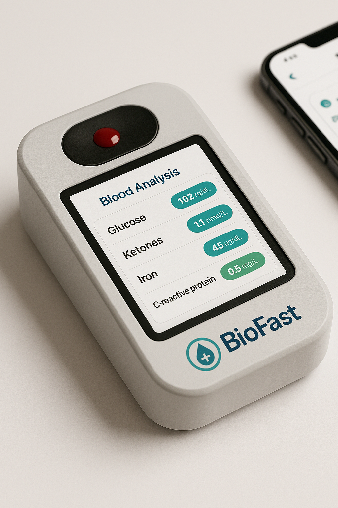

What is BioFast?
BioFast is a compact home device that analyzes a single drop of blood to detect essential biomarkers (glucose, ketones, iron, C-reactive protein, and more) and uses artificial intelligence to provide personalized recommendations for nutrition, fitness, and intermittent fasting. Perfect for people who care about health, weight control, and disease prevention.

BioFast Features
üî¨ Blood biomarker analysis from a single drop
ü§ñ AI-driven personalized health recommendations
üì± Mobile app synchronization
⏱️ Fast results in under 2 minutes
Introducing BioFast Pro 2
BioFast Pro 2 is an advanced device with an integrated automatic finger prick and internal test strip loading. It collects the blood sample, analyzes it inside the device, and provides instant biomarker results with AI-powered recommendations—all fully automated.